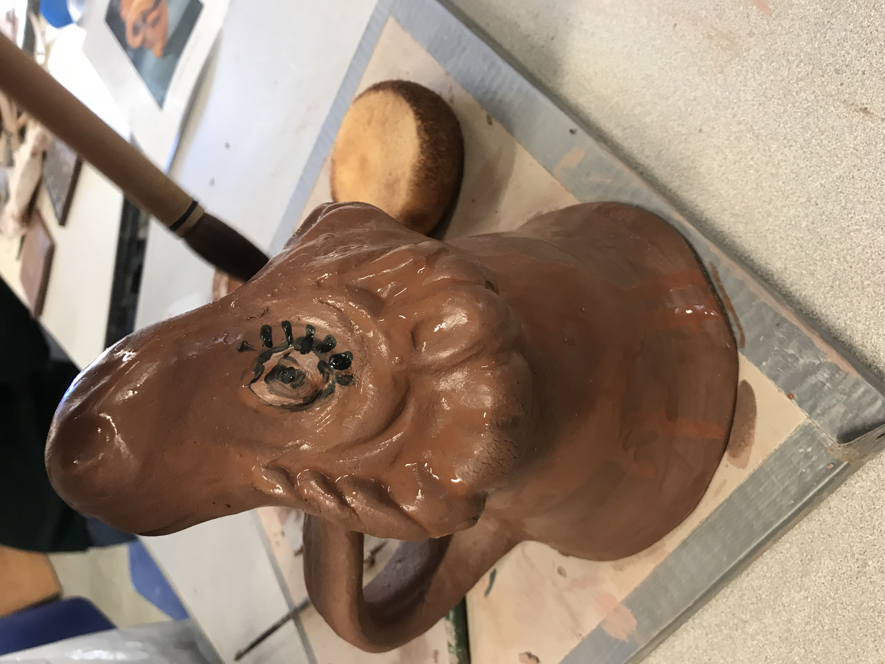
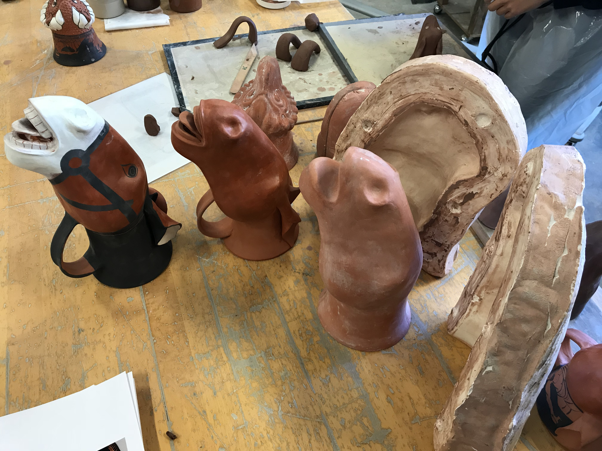
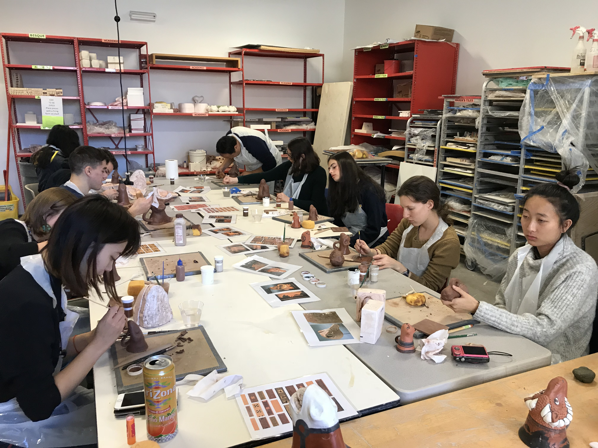
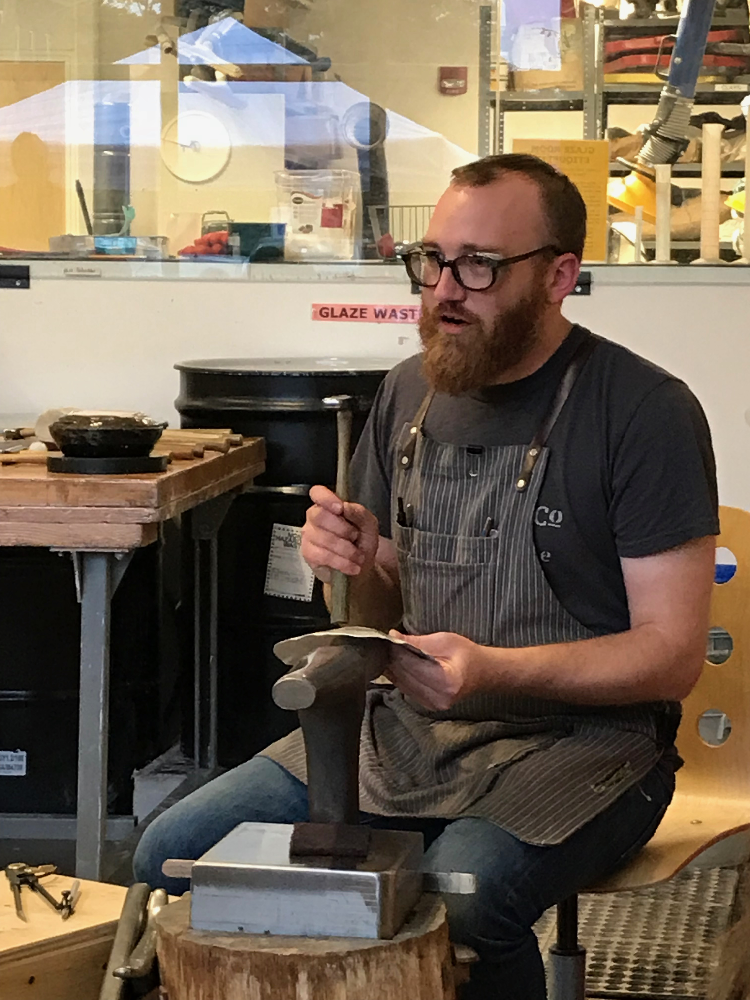

A student in action painting their drinking vessel

A progression of work

The museum group hard at work recreating their vessels
Taking as a starting point the special exhibit, Animal-Shaped Vessels from the Ancient World: Feasting with Gods, Heroes, and Kings, curated by Susanne, the members of Assignment proceeded along multiple parallel tracks to investigate a series of questions: What was the experience of participants in a banquet? How are silver, copper, and iron—materials that can be used to form vessels in the ancient world—affected chemically by interaction with liquids such as wine, water, and beer? Might this interaction alter a flavor profile and lead toward the use of some vessels? How did silver come to be prominent when the techniques of its manufacture can be so intricate? Do modern attitudes toward the use of silver share characteristics with that known from the ancient world? What processes were involved in the crafting of ceramic vessels, and particularly of terracotta?
These studies were accompanied by close observation of reliefs and ancient vessels, hands-on experience with replicating animal-shaped vessels in ceramic, attendance at a silver symposium and accompanying workshop, and a series of interviews with experts. The results of the study are expressed here through a video that documents and records the intellectual odyssey we undertook.

